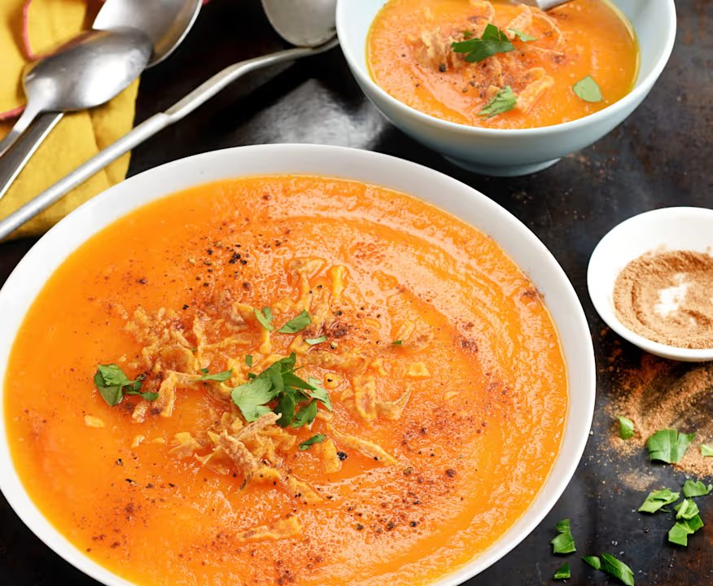

Soupe de potimarron aux épices
Ingrédients
4×
- 100 g d'oignon
- 30 g de beurre
- 500 g de potimarron
- 150 g de pomme de terre
- 300 g d'eau
- 200 g de lait
- 4 pincées de quatre-épices
- sel
- 2 c. à s. d'oignons frits
- poivre

Préparation
Étape 1
Dorer 100 g d'oignon avec 30 g de beurre 7 min/120ºC/sens inverse/vitesse 1, sans le gobelet.
Étape 2
Ajouter 500 g de potimarron non pelé en dés, 150 g de pomme de terre, 300 g d'eau, 200 g de lait, 4 pincées de quatre-épices et du sel. Cuire 20 min/100ºC/vitesse 1, puis mixer 30 sec/vitesse 6.
Étape 3
Servir parsemé de 2 c. à s. d'oignons frits et de poivre.
Conseils
- Remplacer le quatre-épices par du cinq-parfums, et les oignons frits par des croûtons.
Résumé
100 g d'oignon
30 g de beurre
Dorer 7 min/120ºC/sens inverse/vitesse 1
500 g de potimarron
150 g de pomme de terre
300 g d'eau
200 g de lait
4 pincées de quatre-épices
sel
2 c. à s. d'oignons frits
poivre
Cuire 20 min/100ºC/vitesse 1 mixer 30 sec/vitesse 6